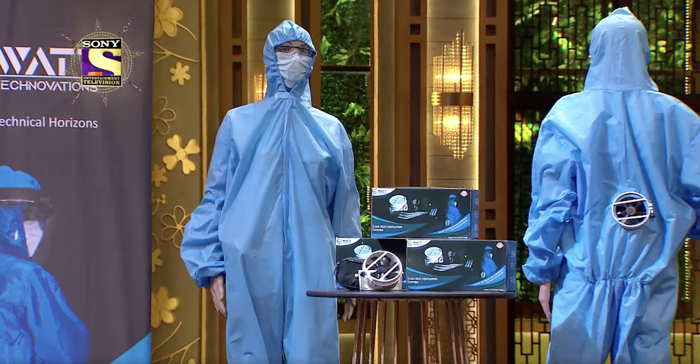
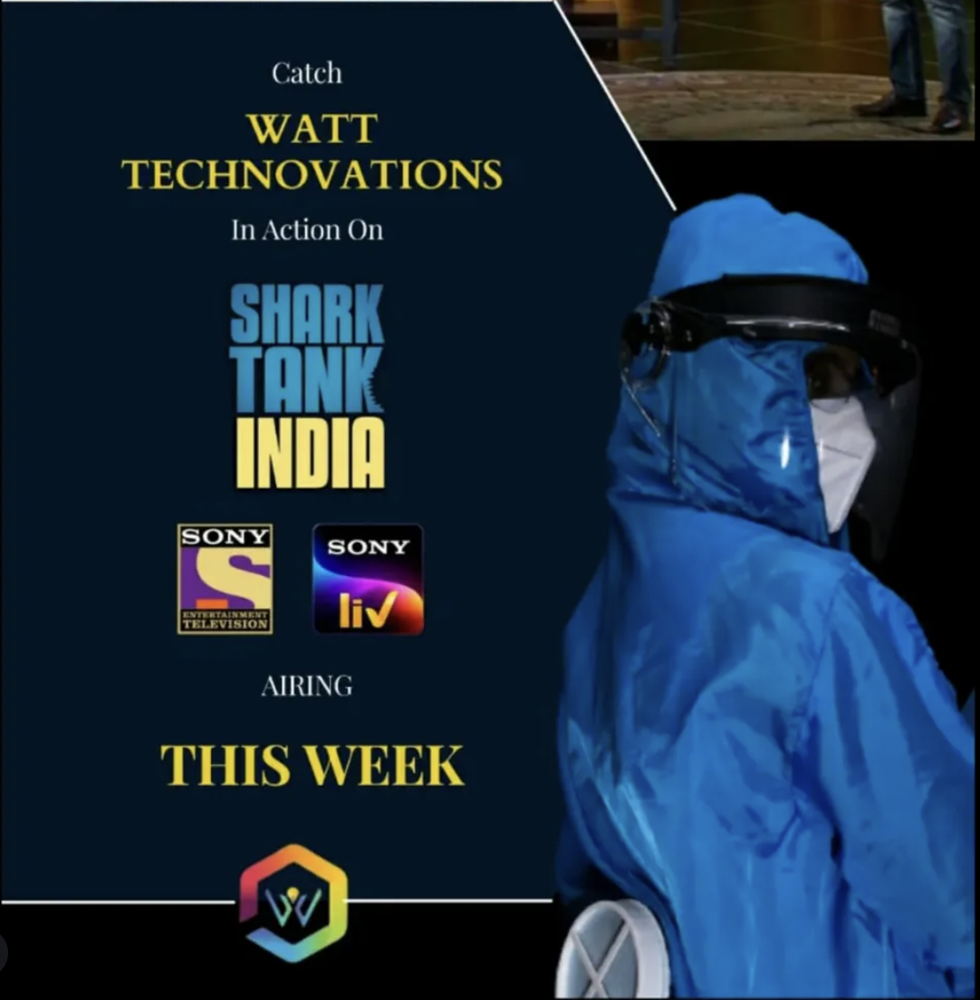
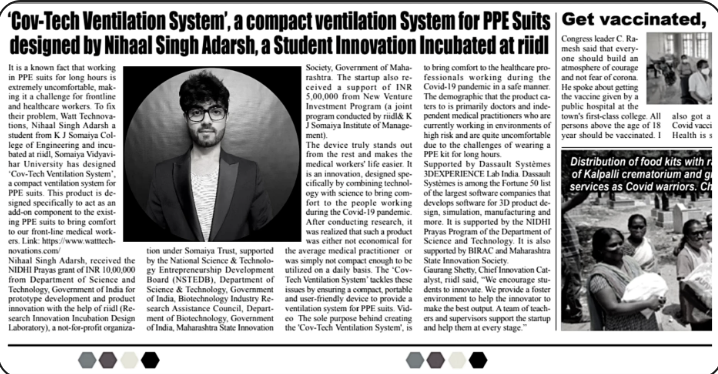

Frontline healthcare workers were spending long hours in PPE suits during Covid, and the lack of airflow made the experience physically draining. They reported feeling overheated, drenched in sweat, and mentally fatigued, which made it harder to stay comfortable and focused through a shift.
"I'm drenched, exhausted, and it's hard to focus."Cov-Tech was built to solve that exact pain point, but at the time it was still an early prototype that needed a clear category, message, and go-to-market path. My role was to shape that opportunity into a product story that was both credible and commercially viable.
From those interviews, two distinct patterns emerged.
talked about personal discomfort, skin issues, and feeling drained at the end of a shift.
Framed the same situation in terms of staff productivity, PPE compliance, and occupational safety.
A PPE-compatible wearable ventilation system that improves staff comfort and PPE adherence, without changing existing protocols.
Hospital pilots, government grants, and founder-led pitches, using news coverage and Shark Tank India as credibility and brand awareness levers.
A personal comfort device doctors and nurses could wear under PPE to stay cooler and more focused during long shifts.
Direct interest from doctors and nurses, with a clear path to learn about, trust, and purchase the product.
Once the positioning was set, the brand narrative was anchored around the founder's story — how he built the device for his doctor mother — and connected that to a broader mission of protecting frontline workers. This narrative carried a consistent tone and visual identity across the website, pitch decks, and social channels.
On the digital side, I designed a multi-channel content strategy:
Each piece leaned on feature-to-benefit mapping, objection handling, and social proof — and I tracked reach, engagement, inquiries, and pilot requests to iterate on messaging and channel focus.
Shark Tank India became a useful forcing function. I co-crafted the pitch narrative to hit four beats quickly: the founder's motivation, the problem inside PPE, how Cov-Tech worked, and why this was a meaningful opportunity in wearable health-tech.
I treated the episode like a campaign rather than a one-off event — planning pre- and post-air communications, aligning our online presence with the TV story, and preparing to catch and respond to interest from both institutions and individuals.
Founder's motivation → the problem inside PPE → how it works → why it matters. Four beats, one shot.



From a PMM perspective, this project reinforced a few principles: